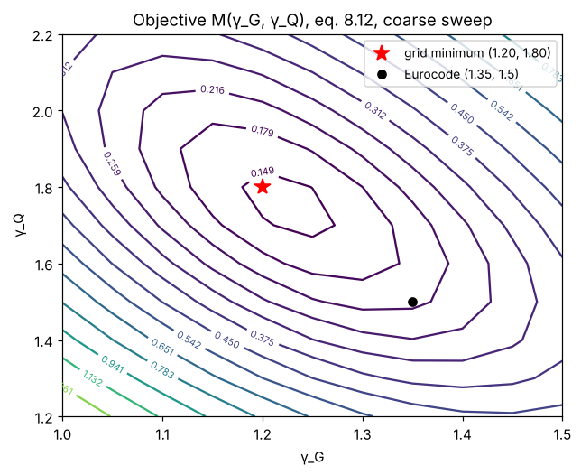
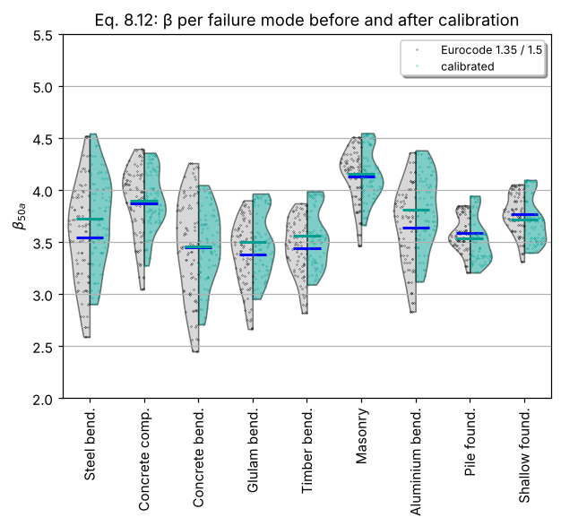
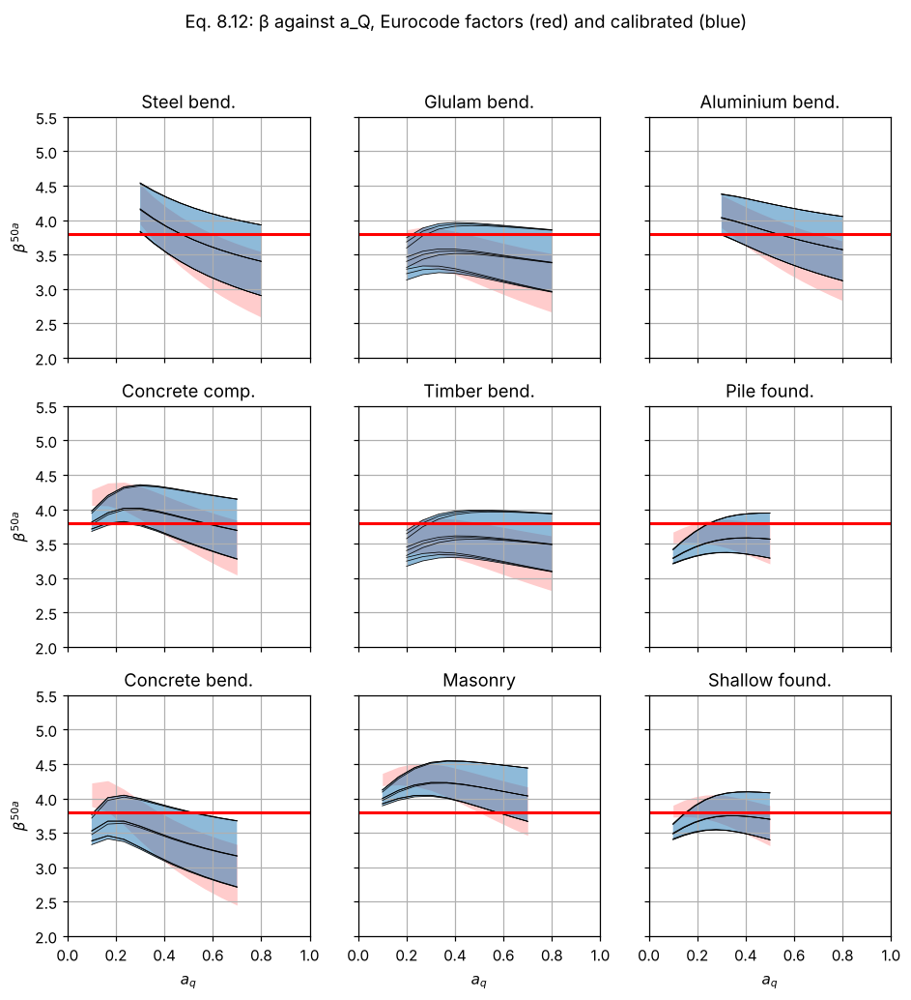
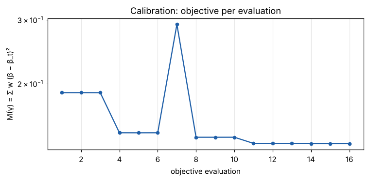
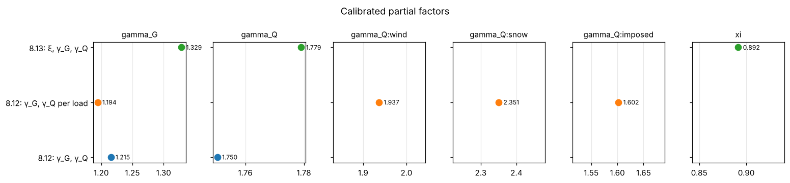

17. Lesson 5 — Calibration: choosing the partial factors#
Lesson 4 showed the reliability the present code delivers: 3.74 on average, between 2.5 and 4.5 across the design situations. Calibration asks which partial factors bring all situations as close as possible to the target \(\beta_t = 3.8\):
A single pair \((\gamma_G, \gamma_Q)\) cannot hit 3.8 everywhere — β falls with \(a_Q\) for any fixed pair — so the optimum is a compromise weighted by how common each situation is. More free parameters (separate factors per load, a ξ for the two-combination equations) buy a smaller residual scatter at the price of a more complicated code.
Each evaluation of \(M\) runs FORM for 810 situations (about a second); a calibration needs 20–60 of them.
import os
import sys
import time
import numpy as np
import pandas as pd
try:
import codecal as cc
except ImportError:
sys.path.insert(0, os.path.abspath('..'))
import codecal as cc
from codecal import plots
from codecal.plots import Figure
FIG = 'figures'
os.makedirs(FIG, exist_ok=True)
pd.set_option('display.width', 120)
def save(fig, name):
"""Save a figure next to the lesson and show it (inline in Jupyter/Spyder)."""
fig.savefig(os.path.join(FIG, name), dpi=150, bbox_inches='tight')
try:
from IPython.display import display
display(fig)
except ImportError: # plain python: the PNG in figures/ is the output
pass
model = cc.ahg_model()
17.1. 1. The objective function as a landscape#
Before optimising, look at \(M(\gamma_G, \gamma_Q)\) on a grid (with a coarser sweep of 108 situations so that it takes seconds). The valley is long and shallow along one direction: raising \(\gamma_G\) and lowering \(\gamma_Q\) (or vice versa) changes the objective little — the two factors can partly substitute each other, which is why calibrated values should always be reported together with the equation and weights they belong to. (The coarse sweep shifts the minimum a little compared with the full model used below.)
coarse = cc.ahg_model(n_mcs=1_000_000, n_aQ=4, n_aG=1)
gG = np.linspace(1.0, 1.5, 11)
gQ = np.linspace(1.2, 2.2, 11)
M = np.zeros((len(gQ), len(gG)))
t0 = time.time()
for i, q in enumerate(gQ):
for j, g in enumerate(gG):
df = cc.evaluate(coarse, cc.START_VALUES.with_values(['gamma_G', 'gamma_Q'], [g, q]))
M[i, j] = cc.objective(df, 3.8)
print(f"grid of {M.size} objective evaluations in {time.time() - t0:.0f} s")
fig = Figure(figsize=(6.5, 5))
ax = fig.subplots()
cs = ax.contour(gG, gQ, M, levels=np.geomspace(M.min() * 1.05, M.max(), 14), cmap='viridis')
ax.clabel(cs, fontsize=7, fmt='%.3f')
i, j = np.unravel_index(M.argmin(), M.shape)
ax.plot(gG[j], gQ[i], 'r*', ms=12, label=f'grid minimum ({gG[j]:.2f}, {gQ[i]:.2f})')
ax.plot(1.35, 1.5, 'ko', label='Eurocode (1.35, 1.5)')
ax.set_xlabel('γ_G')
ax.set_ylabel('γ_Q')
ax.set_title('Objective M(γ_G, γ_Q), eq. 8.12, coarse sweep')
ax.legend(loc='upper right', fontsize=9)
save(fig, 'lesson05_objective_landscape.png')
grid of 121 objective evaluations in 12 s

17.2. 2. Calibrating γ_G and γ_Q for eq. 8.12#
calibrate minimises \(M\) with SLSQP. free names the parameters the
optimiser may change; the others keep their start values. The printout
shows every objective evaluation.
t0 = time.time()
cal_12 = cc.calibrate(model, free=('gamma_G', 'gamma_Q'), equation='8.12', start=cc.START_VALUES)
print(f"\n{cal_12}\n({time.time() - t0:.0f} s)")
eval 1: gamma_G=1.3500, gamma_Q=1.5000 M = 1.889e-01
eval 2: gamma_G=1.3501, gamma_Q=1.5000 M = 1.889e-01
eval 3: gamma_G=1.3500, gamma_Q=1.5001 M = 1.889e-01
eval 4: gamma_G=1.1493, gamma_Q=1.8187 M = 1.464e-01
eval 5: gamma_G=1.1494, gamma_Q=1.8187 M = 1.464e-01
eval 6: gamma_G=1.1493, gamma_Q=1.8188 M = 1.464e-01
eval 7: gamma_G=1.3231, gamma_Q=1.9451 M = 2.916e-01
eval 8: gamma_G=1.1754, gamma_Q=1.8377 M = 1.423e-01
eval 9: gamma_G=1.1755, gamma_Q=1.8377 M = 1.423e-01
eval 10: gamma_G=1.1754, gamma_Q=1.8378 M = 1.423e-01
eval 11: gamma_G=1.2234, gamma_Q=1.7315 M = 1.369e-01
eval 12: gamma_G=1.2235, gamma_Q=1.7315 M = 1.369e-01
eval 13: gamma_G=1.2234, gamma_Q=1.7316 M = 1.369e-01
eval 14: gamma_G=1.2154, gamma_Q=1.7505 M = 1.366e-01
eval 15: gamma_G=1.2155, gamma_Q=1.7505 M = 1.366e-01
eval 16: gamma_G=1.2154, gamma_Q=1.7506 M = 1.366e-01
calibrated gamma_G, gamma_Q (β_t = 3.8)
gamma_G 1.215
gamma_Q 1.750
weighted-mean β 3.741 → 3.809
objective 1.366e-01 (16 evaluations)
(16 s)
The optimiser lowers \(\gamma_G\) and raises \(\gamma_Q\): the status quo was too conservative for permanent-load-dominated structures and not conservative enough for variable-load-dominated ones, exactly what the falling β–\(a_Q\) curves of lesson 4 said. The weighted mean lands close to 3.8 by construction; what matters is the scatter around it:
before, after = cal_12.sweep_before, cal_12.sweep_after
print(f"spread of β (weighted std): before {np.sqrt(np.average((before.beta - before.beta.mean())**2, weights=before.weight)):.3f}"
f" after {np.sqrt(np.average((after.beta - after.beta.mean())**2, weights=after.weight)):.3f}")
save(plots.plot_beta_distribution(after, by='mode', beta_target=3.8, ref_df=before,
labels=('calibrated', 'Eurocode 1.35 / 1.5'),
title='Eq. 8.12: β per failure mode before and after calibration'),
'lesson05_before_after_mode.png')
save(plots.plot_beta_vs_aQ(after, beta_target=3.8, ref_df=before,
title='Eq. 8.12: β against a_Q, Eurocode factors (red) and calibrated (blue)'),
'lesson05_before_after_aQ.png')
save(plots.plot_calibration_history(cal_12), 'lesson05_history.png')
spread of β (weighted std): before 0.441 after 0.383



17.3. 3. More degrees of freedom#
Separate factors for wind, snow and imposed load let the optimiser address the systematic differences between the loads (snow low, imposed high in the status quo):
cal_12_loads = cc.calibrate(model, free=('gamma_G', 'gamma_Q:wind', 'gamma_Q:snow', 'gamma_Q:imposed'),
equation='8.12', start=cc.START_VALUES, verbose=False)
print(cal_12_loads)
calibrated gamma_G, gamma_Q:wind, gamma_Q:snow, gamma_Q:imposed (β_t = 3.8)
gamma_G 1.194
gamma_Q:wind 1.937
gamma_Q:snow 2.351
gamma_Q:imposed 1.602
weighted-mean β 3.741 → 3.815
objective 7.208e-02 (42 evaluations)
17.4. 4. The two-combination rule, eq. 8.13, with ξ free#
cal_13 = cc.calibrate(model, free=('xi', 'gamma_G', 'gamma_Q'), equation='8.13',
start=cc.START_VALUES, verbose=False)
print(cal_13)
calibrated xi, gamma_G, gamma_Q (β_t = 3.8)
xi 0.892
gamma_G 1.329
gamma_Q 1.779
weighted-mean β 3.445 → 3.809
objective 1.344e-01 (30 evaluations)
17.5. 5. Comparing the calibrations#
The objective value is the measure of success: the smaller, the more uniform the reliability across the situations the code covers.
results = {'8.12: γ_G, γ_Q': cal_12, '8.12: γ_G, γ_Q per load': cal_12_loads, '8.13: ξ, γ_G, γ_Q': cal_13}
summary = pd.DataFrame({name: {**{k: round(v, 3) for k, v in r.factors.as_dict().items()},
'objective': round(r.objective, 5), 'weighted-mean β': round(r.beta_after, 3)}
for name, r in results.items()}).T
print(summary.to_string())
save(plots.plot_gamma_comparison(results), 'lesson05_gamma_comparison.png')
summary.to_csv('calibration_results.csv')
gamma_G gamma_GP xi gamma_Q:wind gamma_Q:snow gamma_Q:imposed objective weighted-mean β
8.12: γ_G, γ_Q 1.215 1.215 0.850 1.750 1.750 1.750 0.13662 3.809
8.12: γ_G, γ_Q per load 1.194 1.194 0.850 1.937 2.351 1.602 0.07208 3.815
8.13: ξ, γ_G, γ_Q 1.329 1.329 0.892 1.779 1.779 1.779 0.13441 3.809

A few things to take from the table:
Differentiating \(\gamma_Q\) by load reduces the objective markedly: the snow load gets the largest factor, the imposed load the smallest. Whether a code should have three variable-load factors is a question of practicality, not of reliability.
With ξ free, the optimiser trades ξ against \(\gamma_G\) — one of the flat directions of the landscape. The calibrated numbers of the two-combination rules depend strongly on the bounds and start values.
All calibrated values are specific to the probabilistic model, the target, the weights and the FORM approximation (lesson 6).
17.6. Exercises#
Calibrate with the target 4.3 (consequence class 3). How much do the factors rise? Is the increase the same for γ_G and γ_Q?
Calibrate eq. 8.14 with ξ free and compare with 8.13.
Give every design situation the same weight (
df['weight'] = constis not enough — change the weights in the model) and recalibrate. Which failure modes gain, which lose?Fix γ_G = 1.35 and calibrate γ_Q alone. Compare the objective with the two-parameter calibration: what does the second parameter buy?